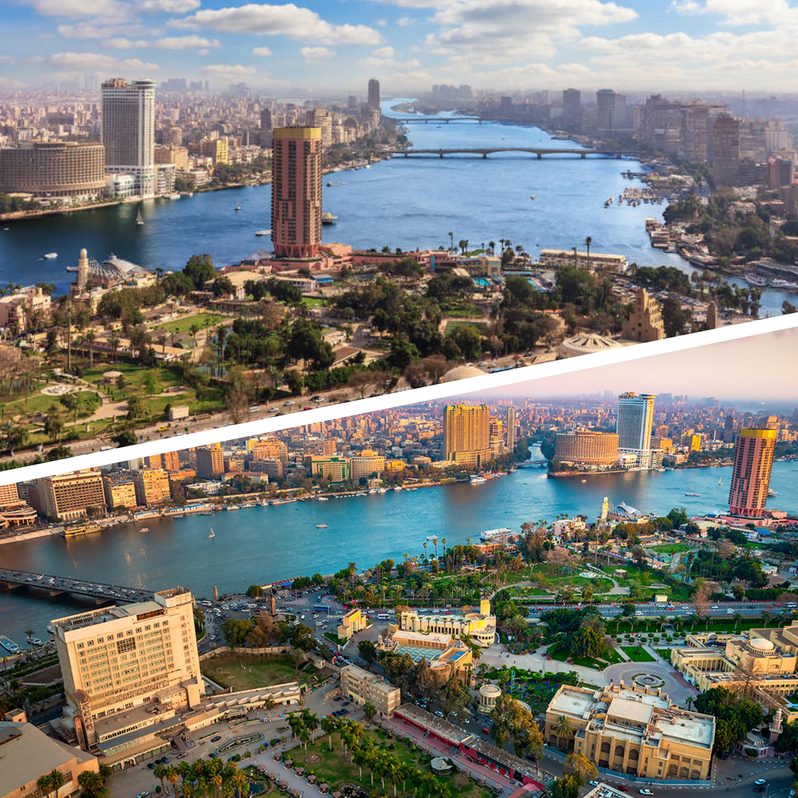

La capitale du pays est tentaculaire. Avec environ 20 millions d’habitants, Le Caire est la plus grande ville d’Afrique et du Moyen Orient ! Faites un stop au cours de votre voyage pour capter la magie de cette fourmilière, aussi démesurée que fascinante ! Le Caire mérite que l’on s’y attarde. Le tourisme, au Caire, ce sont de nombreux monuments historiques à visiter.
Qui dit Caire dit Pyramide !
Situées à environ 18 kilomètres de Caire, les trois principales pyramides sont : Khéops, Khéphren et Mykérinos. La plus haute d'entre elles fait 140m de hauteur, fascinant !
Le fleuve NIL
L’immense capitale égyptienne, Le Caire, est traversée par le fleuve du Nil. Le cœur de la ville abrite la place Tahrir et le musée égyptien du Caire, un trésor d’antiquités avec ses momies royales et le trésor du pharaon Toutânkhamon.

La mosquée Mohamed Ali
La mosquée Mohammed Ali est un sanctuaire islamique de la ville du Caire. Inscrite dans le périmètre de l'antique citadelle de Saladin, elle doit sa construction au vice-roi Muhammad Ali Pacha, qui lui a laissé son nom. Un site à visiter à tout prix !